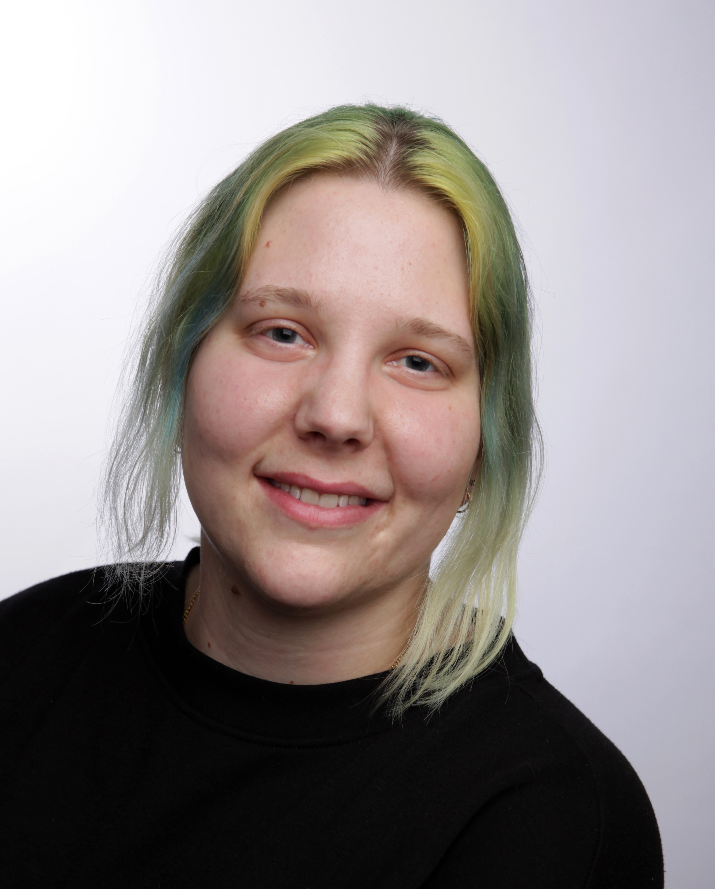

Hi hi
I am Laura Kupferschmid, an Artist and Creative mind, currently studying Media and Design at Furtwangen University. I love to try all kinds of Artsy work. From Movie Produktion, to Photographie or 3D- Animation and Blender Modelling. I am learning and loving it all and on this website you can see all of my current Projects and works.
My Skills
Photoshop:
Audition:
Premiere Pro:
Mircosoft Word:
My CV
Name: Laura Kupferschmid
Age: 25
Located: Villingen
Ocupation Furtwangen University
